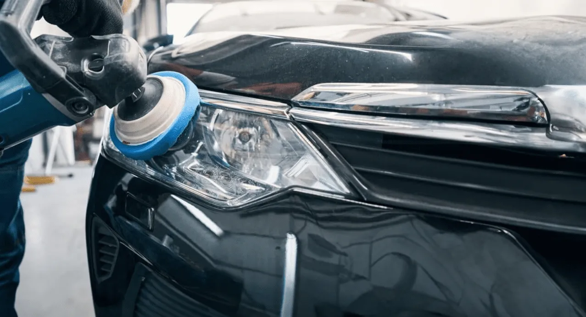

01
01
EXTERIOR CARE
Premium Exterior Detailing
Restore a clean, refined appearance with careful washing, surface cleansing, and a meticulous finishing touch.
Explore serviceFrom flawless paint refinement to advanced surface protection, discover specialist care designed to preserve your vehicle's finish, character, and brilliance.
Every vehicle has different needs. Discover specialist treatments designed to refine its appearance, protect its surfaces, and preserve its finish.
01
Restore a clean, refined appearance with careful washing, surface cleansing, and a meticulous finishing touch.
Explore service 02
02
Refresh upholstery, carpets, leather, and high-touch surfaces for a cleaner, more comfortable cabin.
Explore service 03
03
Reduce suitable paint imperfections and refine surface clarity for a deeper, more consistent gloss.
Explore service 04
04
Add a durable protective layer that supports gloss, water repellency, and easier routine maintenance.
Explore service 05
05
Help shield vulnerable painted surfaces from everyday road debris, light abrasions, and wear.
Explore service
06Improve the appearance of cloudy or oxidized headlight lenses through suitable restoration treatment.
Explore service 07
07
Carefully clean accessible engine bay surfaces to refresh the appearance while respecting sensitive components.
Explore service 08
08
Remove accumulated grime from suitable wheel surfaces and finish tyres for a cleaner, more complete appearance.
Explore serviceExceptional detailing is about more than appearance. It is the care given to every surface, texture, and finish.
Careful washing, surface cleansing, and refined finishing help bring out the clarity and character of your vehicle's paint.

Thoughtful interior care refreshes the spaces you interact with every day, from upholstery to high-touch surfaces.
Different protection technologies serve different purposes. Understand the difference before choosing the right treatment for your vehicle.
.png)
A protective surface treatment
Gloss, water repellency, and easier maintenance.
Owners seeking a refined finish and simpler upkeep.
A physical protective film
Helps defend covered paint against stone chips and impacts.
Owners prioritising physical protection on selected panels.
Not sure which option suits your vehicle? Start with a professional assessment.
Book a consultationSwirl marks, light scratches, and dull paint can affect the clarity of your vehicle's finish. Paint correction refines suitable paintwork through a controlled polishing process.
 BEFORE — PAINT CONDITION
Surface imperfections
BEFORE — PAINT CONDITION
Surface imperfections
 AFTER — REFINED FINISH
Enhanced clarity and gloss
AFTER — REFINED FINISH
Enhanced clarity and gloss
Results depend on the paint condition, defect depth, and available clear-coat thickness. Not every imperfection can safely be removed.
Assess paint condition and identify suitable treatment.
Clean the surface and prepare it for controlled polishing.
Polish appropriate areas to improve clarity and gloss.
Inspect the finish and discuss suitable protection options.
Tell us about your vehicle, your priorities, and the finish you want to achieve. We'll help you explore the right care.
Precision detailing. Thoughtful protection. Exceptional results.